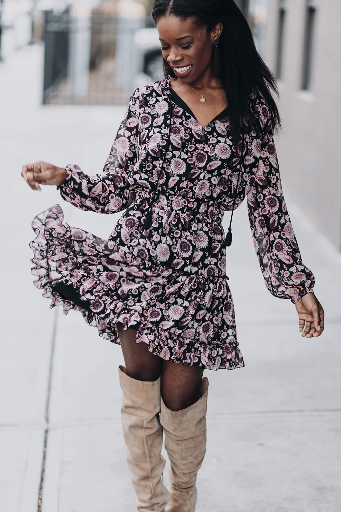
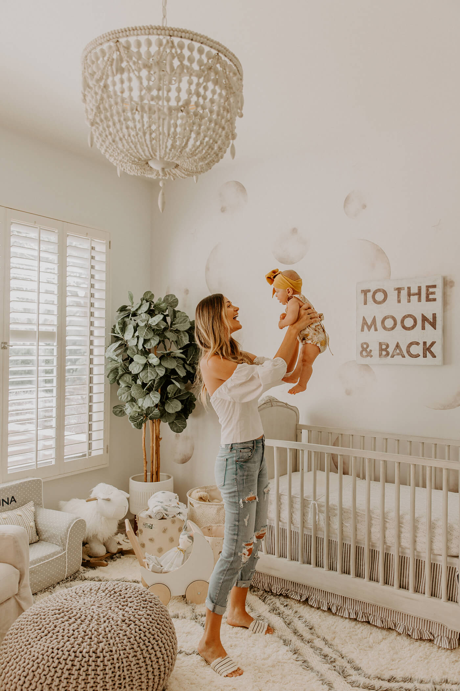

Prince
The Top 10 Fashion Tips From Stylish Women
Between balancing career, family, and finding time for ourselves, stepping out the door with style every day can seem impossible—but it’s not! We asked the most stylish women we know (our Stylists) what their secrets are for unlocking the next level of style.

1. PLAN IT OUT
“You can’t plan for everything, but don’t let your mornings catch you off-guard. Just like you’d plan a week’s worth of meals on a Sunday if you’re trying to save time, give outfit planning a shot to make way for stress-free mornings and outfit-regret-free days.” —Stylist, Amber F.
2. SEEK OUT (STYLISH) INSPIRATION
“Find stylish women to follow—whether it’s your favorite Instagram style star or your sister’s best friend’s cousin. Discover fashionistas whose style inspires you, then use their photos as inspiration to help plan your outfits (see tip #1). Not sure where to start? Check out our Instagram and Pinterest boards for endless inspiration from our most stylish ladies.” —Stylist, Jennifer M.
3. When in doubt, (OVER)DRESS
“If you’re ever on the fence about what to wear, consider your destination and who you’ll see. When in doubt, err on the side of being more dressy. If you’re worried about looking too done-up, bring along a casual layer like a jean or cargo jacket to give your look that effortless chic touch.” —Stylist, Angela G.
4. Step out of your comfort zone
“It never hurts to try something new. Whether that includes a bright new hue that stands out from your usual neutral palette, or shifting from skinny jeans to a boyfriend silhouette, great style is built from trying new things. Who knows what trends you might discover you love!” —Stylist, Jennifer M.

5. ALWAYS ACCESSORIZE
“Try to wear at least one accessory, whether it’s a statement necklace, a pop-color bag or a great pair of earrings (or all of the above). A solid statement piece can take an ensemble from ho-hum to a stand-out in seconds.” —Stylist, Stephania S.
6. CRAFT A CAPSULE WARDROBE
“A stylist’s not-so-secret secret weapon is a capsule wardrobe. A closet full of items that can be mixed and matched with ease can take the guesswork out of your morning. Invest in classics that will last a lifetime, like a great pair of jeans, a simple LBD and timeless jewelry.” —Stylist, Stephania S.
7. TRY A STATEMENT SHOE
“When it comes to footwear, color, print and style packs a huge aesthetic punch—and they don’t have to be sky-high heels, either (flats can make the same statement and your feet will thank you). Even if your look is casually thrown together, adding a printed flat or a pop-of-color wedge can make things appear more intentional.” —Stylist, Jennifer M.
8. OWN AT LEAST ONE CONVERSATION PIECE
“Every once in a while, you need that pure “wow” factor. Whether it’s an amazing pair of over-the-knee boots, a vintage dress that you borrowed from your mom’s closet or an enviable handbag, keep something in your arsenal for the days you need to really show up stylish.” —Stylist, Chelsea T.
9. Get to know your body shape
“The golden rule of stylish women? Fit first. With that, getting to know your body shape is key. Consider yourself a petite pear shape and prefer to highlight your shoulders? Build your closet with clothes that put the spotlight on your shape and favorite features.” —Stylist, Crista G.
10. Age is just a number
“When it comes to trying a new trend or rocking a piece that catches your eye, don’t allow that number to prevent you from trying something new. 62 and looking to rock a pair of boyfriend jeans? Try it! 22 and wanting to shift into a buttoned-up, business-first closet? Button it up!” —Stylist, Megan S.
Get ready to put these fashion tips to the test with five fresh pieces. Take your style quiz and sign up for your first Fix. Our expert stylists will pick a personalized variety of styles to ship to your doorstep. Or, you can instantly buy curated pieces on Stitch Fix Freestyle™ in your size and style. Keep what you like and send back the rest. Shipping and returns are always on us. Now you can build your dream wardrobe, hassle-free.
Prince
follow us on :-